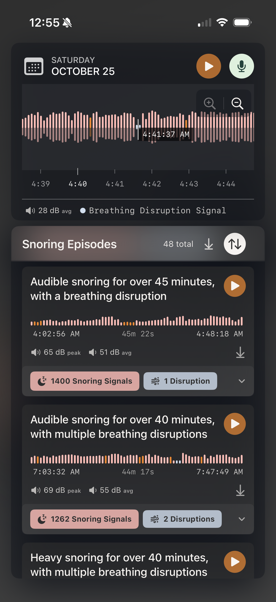

See Your Sleep Like Never Before
A snore tracking app for iOS with an interactive timeline. Record every snoring episode, detect breathing pauses, and visualize your entire night.
Free on iOS • No Subscription
A snore tracking app for iOS with an interactive timeline. Record every snoring episode, detect breathing pauses, and visualize your entire night.
Free on iOS • No Subscription
A snore recorder with timeline visualization that shows every episode and breathing pause
Wake up and see your entire night visualized on an interactive timeline. Scroll through your sleep, zoom in on specific hours, and instantly spot patterns.
While you slept, AI detected every snore, gasp, cough, and breathing pause. Now you can see exactly when each sound occurred throughout the night.
Tap any episode to see how long it lasted, how many times you snored, and read a plain-English summary of what happened during that period.
Curious what you actually sounded like? Tap to play any moment from the night with audio enhancement that makes sleep sounds easy to hear.
Compare nights and weeks side by side. Export detailed reports to share with your doctor or track improvements over time.
Everything stays on your iPhone. No cloud uploads, no servers, no third party data sharing. Your sleep sounds remain completely private unless you choose to export.

Our algorithm analyzes your sleep audio in real-time, identifying patterns that indicate breathing irregularities—including pauses lasting 10+ seconds.
Detects and monitors audible breathing sounds for at least one minute to establish accurate baseline patterns before disruption detection begins
AI identifies extended quiet periods lasting 10+ seconds—a key indicator of potential breathing disruptions
Detects gasps, coughs, or sudden breathing sounds that follow the silent period, confirming a disruption event
Automatically places subtle gray-blue markers at exact timestamps, creating a visual map of disruptions throughout your night
Loved by users worldwide
"Wow thanks I've just dl and opened it. I'm Impressed. Measuring my snoring tonight!"
"Man, this app is amazing, beautifully designed, intuitive, everything just works and in real time! Really appreciate it!"
"The app is very well conceptualized and implemented, congrats!"
"Une pépite (A gem) — Ultra-performant detection, impressively clear recordings. Free, no ads, battery-efficient. The interface is top-notch with fluid navigation and clear graphics. Rare to find an app so complete, efficient and respectful of the user."
Visualize your sleep patterns with precision
Everything you need to know about Snore Timeline
Snore Timeline focuses on what matters most: a complete, uncompromised view of your sleep. Unlike other apps that use data sampling, our snore recorder with timeline visualization captures and analyzes every sound in real-time. You get an interactive timeline that shows every snoring episode—no shortcuts taken, just meticulous attention to detail.
No. Snore Timeline is completely free with no subscription required. All features are included: breathing disruption detection, episode grouping, nightly summaries, and data export—no hidden costs or in-app purchases.
Yes, Snore Timeline detects breathing pauses by analyzing your sleep audio. It identifies extended silent periods (10+ seconds) followed by gasps or recovery sounds. The app marks these breathing disruptions on your timeline so you can see patterns. Note: This is audio analysis only, not a medical device. Breathing pauses may be worth discussing with a healthcare professional.
Very accurate. Our AI monitors your breathing sounds for at least one minute to establish baseline patterns before detection begins. It then analyzes audio in real-time to identify snoring, gasps, coughs, and breathing disruptions with high precision.
Snore Timeline is a snoring app that shows episodes by grouping consecutive snore signals together. When snoring is detected, the app creates an episode. If no snoring occurs for 30 seconds, that episode ends and a new one begins when snoring resumes. Each episode displays duration, snore count, and a plain-English summary. This helps you see patterns and understand exactly when you snored most during the night.
Absolutely. All audio processing happens entirely on your iPhone—no cloud uploads, no external servers, no accounts required. Your recordings stay on your device and only you have access to them. You can export data to share with doctors while maintaining complete privacy.
Yes! Snore Timeline supports Bluetooth audio devices including AirPods, making it easy to record throughout the night without draining your phone's battery.
Snore Timeline is optimized for overnight recording. Most users report 20-30% battery drain over 8 hours of recording. We recommend keeping your phone plugged in during recording for best results.
Keep your phone about 1-2 feet away from you for the best results. The closer your phone is, the louder the sounds will be detected. However, placing it too far away reduces accuracy, especially for capturing breathing sounds. Breathing must be clearly audible—if too faint, it cannot be detected. Ideal placement is on a nightstand near your bed, plugged in for charging.
Your recordings are stored locally within the Snore Timeline app. Each nightly summary displays your interactive timeline with all audio clips from that night.
To export recordings: Tap the download button on any snoring episode to save it to your Files app.
Where to find exported files:
You can also export detailed snoring episode data (breathing disruptions, episodes, metrics). All data stays on your device unless you choose to share it.
No subscription • No hidden costs • Complete privacy
Download on App StoreA snoring app that shows episodes, breathing pauses, and your complete sleep timeline